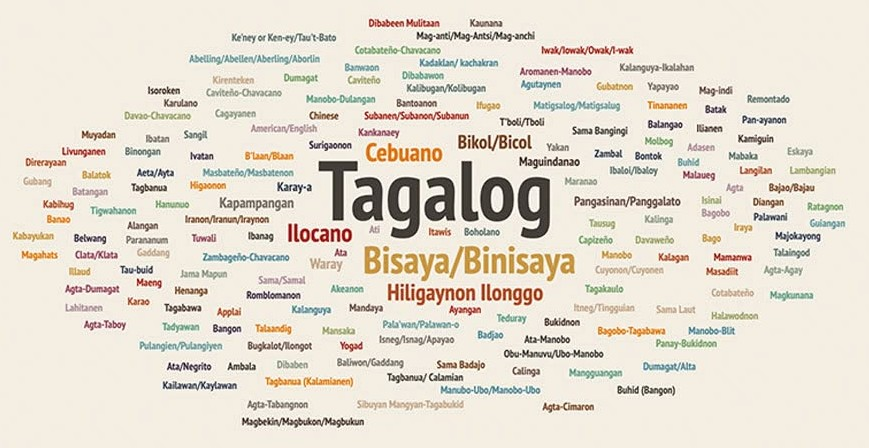
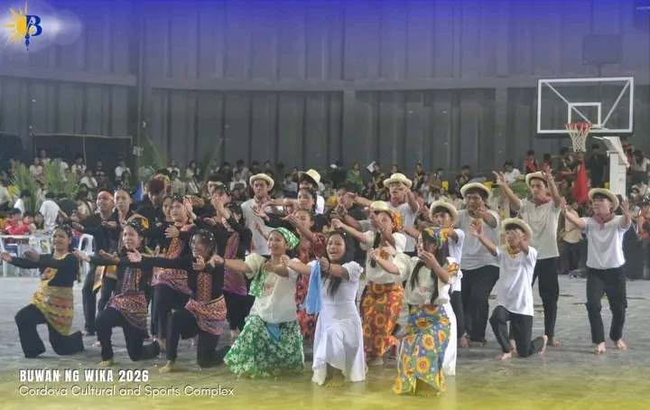

Panimula
Inihanda ang website na ito upang ipunin sa iisang lugar ang lahat ng aralin sa Filipino 1, mula Prelim hanggang Finals. Bawat aralin ay may paliwanag sa sariling pananalita, mga halimbawa, at biswal na gabay.
Mahalaga ang mga araling ito dahil ang wika ang tulay ng pagkakaunawaan. Mula sa kasaysayan ng Filipino hanggang sa wastong pagbuo ng pangungusap at talumpati, nalilinang ang kakayahan nating makinig, magsalita, bumasa, at sumulat nang malinaw at may pagmamalaki sa sariling wika.
Aralin 1: Kahulugan, Kahalagahan at Katangian ng Wika

Mula sa Latin na lengua (dila) ang salitang wika. Ayon kay Henry Gleason, ito ay masistemang balangkas ng sinasalitang tunog na pinili at isinaayos sa paraang arbitraryo para magamit ng mga taong kabilang sa isang kultura. Tulay ito sa pagkakaunawaan, nagpapaunlad ng kasanayan ng tao, at nagpapagaan ng gawain.
Mga katangian ng wika at halimbawa
- Pantao-tunog: nabubuo sa labi, dila, ngipin at lalamunan; ang p, b, m ay likha ng pagdikit ng labi.
- Masistemang balangkas: tunog → salita → parirala → pangungusap.
- Arbitraryo: magkaiba ang tawag sa iisang bagay, tulad ng aso sa Filipino at dog sa Ingles.
- Nagbabago: may mga salitang nawala na, gaya ng lelong (matandang lalaki), salumpit (silya) at salipawpaw (eroplano).
- Malikhain at natatangi: nakalilikha tayo ng tula, kuwento at bagong salita; may sariling tunog at sistema ang bawat wika.
Teorya ng pinagmulan ng wika
Gawain at Maikling Pagsusulit
Sagutin ang mga tanong.
- Mula sa anong salitang Latin nagmula ang wika?
- Anong katangian ng wika ang tumutukoy sa walang likas na dahilan ng tawag sa isang bagay?
- Anong teorya ang nagsasabing nagmula ang wika sa panggagad sa tunog ng kalikasan?
- Gawain: Magbigay ng isang lumang salita at ang kahulugan nito.
Tingnan ang sagot
1) lengua 2) arbitraryo 3) Bow-wow 4) Halimbawa: salumpit (silya)
Aralin 2: Mga Tungkulin ng Wika (Halliday)
May pitong gamit ang wika sa araw-araw nating pakikipag-ugnayan.
| Tungkulin | Layunin | Halimbawa |
|---|---|---|
| Pang-interaksyunal | Panatilihin ang ugnayang sosyal | “Kumusta ka?” |
| Pang-instrumental | Tugunan ang pangangailangan | “Pahingi po ng tubig.” |
| Panregulatori | Kontrolin ang kilos ng iba | “Bawal manigarilyo.” |
| Pampersonal | Ihayag ang damdamin o opinyon | “Masaya ako ngayon.” |
| Pang-imahinasyon | Lumikha nang malikhain | Tula, kuwento, awit, nobela |
| Pangheuristiko | Maghanap ng impormasyon | “Bakit umiikot ang mundo?” |
| Pang-impormatibo | Magbigay ng impormasyon | “May bagyo bukas.” |
Gawain at Maikling Pagsusulit
Tukuyin ang tungkulin ng wika sa bawat pahayag.
- “Bawal tumawid dito.”
- “Kumusta ka na?”
- “Bakit maalat ang dagat?”
- “Masaya ako ngayon.”
Tingnan ang sagot
1) panregulatori 2) pang-interaksyunal 3) pangheuristiko 4) pampersonal
Aralin 3: Varayti at Varyasyon ng Wika
Hindi iisa ang anyo ng wika. Nagkakaiba ito ayon sa tao, lugar, panahon, at sitwasyon.
| Varayti | Kahulugan | Halimbawa |
|---|---|---|
| Idyolek | Personal na istilo ng pananalita ng isang tao | “Magandang Gabi Bayan” (Noli de Castro) |
| Dayalek | Wika ayon sa lugar o rehiyon | Tagalog: Bakit? · Batangas: Bakit ga? · Ilocos: Bakit ngay? |
| Etnolek | Wika ng pangkat etniko | vakuul (Ivatan), palangga, kalipay |
| Ekolek | Wika sa loob ng tahanan | palikuran, pamingganan, pappy, mumsy |
| Sosyolek | Wika ng partikular na grupo o katayuan | “Repapips, ala na ako datung eh.” |
| Register | Espesyalisadong wika ng larangan (field, mode, tenor) | kapital: puhunan sa negosyo, kabisera sa heograpiya |
| Pidgin | Pansamantalang wika ng mga walang komong wika | “Ako tinda damit maganda.” |
| Creole | Halo-halong wika na naging wika ng isang lugar | Chavacano: “Buenas dias” |
Gawain at Maikling Pagsusulit
Tukuyin ang varayti ng wika.
- “Magandang Gabi Bayan” ni Noli de Castro
- “Bakit ga?” ng mga taga-Batangas
- “Ako tinda damit maganda.”
- “Buenas dias” sa Chavacano
Tingnan ang sagot
1) idyolek 2) dayalek 3) pidgin 4) creole
Aralin 4: Filipino Bilang Wikang Pambansa
Ang wikang pambansa ay ang wikang pinagtibay ng pamahalaan para maging tulay ng iba’t ibang pangkat-etniko sa ating bansa.
Daan ng pag-unlad nito
- 1935: Iniutos ng Konstitusyon na bumuo ng wikang pambansa batay sa isang katutubong wika.
- 1936: Nilikha ng Batas Komonwelt Blg. 184 ang Surian ng Wikang Pambansa.
- Disyembre 30, 1937: Pinili ng EO 134 ni Pangulong Quezon ang Tagalog bilang batayan.
- 1940: Ipinalimbag ang diksyunaryo at balarila (EO 263); sinimulang ituro ang wikang pambansa noong Hunyo 19.
- Hulyo 4, 1946: Naging opisyal na wika ayon sa Batas Komonwelt Blg. 570.
- 1959: Tinawag itong Pilipino sa Memorandum Blg. 7 ni Kalihim Jose Romero.
- 1987: Itinadhana ng Konstitusyon, Art. XIV Sek. 6, na Filipino ang wikang pambansa.
Tagalog, Pilipino, Filipino
Katutubong wika ng mga Tagalog
Wikang pambansa batay sa Tagalog
Wikang pambansang patuloy na yumayaman mula sa lahat ng wika sa bansa
Mga halimbawa ng gamit ng Filipino
- Wikang panturo sa mga paaralan.
- Wikang opisyal sa pamahalaan.
- Wika ng balita, pelikula at telebisyon.
- Wikang nag-uugnay sa mga taga-iba’t ibang rehiyon.
Gawain at Maikling Pagsusulit
Sagutin ang mga tanong.
- Anong kautusan ang pumili sa Tagalog bilang batayan ng wikang pambansa?
- Anong taon tinawag na Pilipino ang wikang pambansa?
- Anong batas ang lumikha sa Surian ng Wikang Pambansa?
- Anong artikulo at seksyon ng Konstitusyon ng 1987 ang nagtatadhana ng Filipino?
Tingnan ang sagot
1) EO 134 (1937) 2) 1959 3) Batas Komonwelt Blg. 184 4) Artikulo XIV, Seksyon 6
Aralin 5: Ang Buwan ng Wikang Pambansa
Ano ito?
Ang Buwan ng Wikang Pambansa ay taunang pagdiriwang ng mga Pilipino na nakatuon sa wikang Filipino at sa iba pang wika ng bansa. Sa loob ng buong buwan, may mga programa, patimpalak, at gawaing pampaaralan na nagbibigay-pugay sa ating wika. Pinangungunahan ito ng Komisyon sa Wikang Filipino (KWF).
Bakit ito ipinagdiriwang tuwing Agosto?
Agosto ang buwan ng kapanganakan ni Pangulong Manuel L. Quezon, ang Ama ng Wikang Pambansa, na isinilang noong Agosto 19. Bilang pagkilala sa kanyang ambag sa pagpili at pagpapaunlad ng wikang pambansa, itinakda ng pamahalaan na ang buong Agosto ang italaga sa pagdiriwang na ito.
Bakit ito mahalaga?
Pinapaalala nito na ang Filipino ay simbolo ng pagkakaisa at pagkakakilanlan ng bansa. Hinihikayat tayo nitong gamitin, pahalagahan, at ipagmalaki ang ating wika araw-araw, hindi lamang tuwing Agosto.
Ang Aming Karanasan sa Pagdiriwang

Sa pagdiriwang ng Buwan ng Wika, naging masaya at makabuluhang karanasan ito para sa aming seksyon ang pakikilahok sa iba't ibang aktibidad. Isa rito ang pagtatanghal namin ng tradisyonal na sayaw na Tinikling. Halos araw-araw kaming nagsanay upang maging maayos at sabay-sabay ang aming mga galaw. Nagtulungan din kami sa pagbuo at paghahanda ng aming food stand, kung saan bawat isa ay nag-ambag ng oras, ideya, at pagsisikap.
Bagama't ikatlong puwesto lamang ang aming nakuha, hindi ito naging hadlang upang maging masaya kami. Mas pinahalagahan namin ang pagkakaisa at mga karanasang pinagsaluhan bilang isang seksyon. Naging mas masaya pa ang pagtatapos dahil nagkaroon kami ng pagkakataong tikman at pagsaluhan ang iba't ibang pagkaing inihanda namin. Sa huli, napagtanto namin na higit na mahalaga ang pagtutulungan at masasayang alaalang nabuo kaysa sa pagkapanalo.
Gawain at Maikling Pagsusulit
Sagutin ang mga tanong.
- Anong buwan ipinagdiriwang ang Buwan ng Wikang Pambansa?
- Anong ahensya ang nangunguna sa pagdiriwang?
- Sino ang Ama ng Wikang Pambansa na isinilang noong Agosto 19?
- Gawain: Isulat ang isang aral na natutuhan mo sa pagdiriwang ng seksyon ninyo.
Tingnan ang sagot
1) Agosto 2) Komisyon sa Wikang Filipino (KWF) 3) Manuel L. Quezon 4) Iba-iba ang sagot
Aralin 6: Ang Alpabeto at Ortograpiyang Filipino
Ang ortograpiya ay ang sistema ng pagsulat at pagbaybay. Nagbago ito kasabay ng pag-unlad ng ating wika.

Sinaunang titik ng ating mga ninuno
Alpabetong Romano na dala ng mga Kastila
Ni Lope K. Santos (1940): 15 katinig at 5 patinig
Dinagdagan ng 11 titik ng Surian ng Wikang Pambansa
Gawain at Maikling Pagsusulit
Sagutin ang mga tanong.
- Ilang titik ang Abakada?
- Sino ang bumalangkas ng Abakada?
- Ano ang sinaunang titik ng ating mga ninuno?
- Gawain: Isulat ang unang pantig ng pangalan mo sa Baybayin gamit ang larawan sa itaas.
Tingnan ang sagot
1) 20 2) Lope K. Santos 3) Alibata o Baybayin 4) Iba-iba ang sagot
Aralin 7: Ang Pantig at Palapantigan
Ang pantig ay walang antalang bugso ng tinig sa pagbigkas ng salita. Ginagamit ang K para sa katinig at P para sa patinig.
| Kayarian | Halimbawa | Kayarian | Halimbawa |
|---|---|---|---|
| P | u-pa | KKP | pri-to |
| KP | ma-li | PKK | eks-perto |
| PK | is-da | KKPK | plas-tik |
| KPK | han-da | KKPKK | trans-portasyon |
Mga tuntunin sa pagpapantig at pag-uulit
- Magkahiwalay ang magkasunod na patinig: aalis → a-a-lis.
- Magkahiwalay na pantig din ang maaga → ma-a-ga at totoo → to-to-o.
- Patinig ang simula, patinig lang ang inuulit: alis → a-a-lis.
- KP ang simula, inuulit ang KP: basa → ba-ba-sa; takbo → ta-tak-bo.
Gawain at Maikling Pagsusulit
Tukuyin ang kayarian ng unang pantig.
- is-da
- pri-to
- han-da
- plas-tik
Tingnan ang sagot
1) PK 2) KKP 3) KPK 4) KKPK
Aralin 8: Ang Sugnay
Ang sugnay ay lipon ng mga salitang may paksa at panaguri na maaaring buo o di-buo ang diwa.

- Makapag-iisa (buo ang diwa): Nakasulat si Zanjoe ng isang mainam na sulatin.
- Makapag-iisa: Ang kanyang ama ay isang guro.
- Di-makapag-iisa (di-buo ang diwa): Nang kami ay lumuwas ng Maynila.
- Di-makapag-iisa: Kung darating sila.
Gamit ng di-makapag-iisang sugnay
| Gamit | Halimbawa |
|---|---|
| Pangngalan | Hindi ko alam kung bakit sila nawawala. |
| Pang-uri | Ang Banaue Rice Terraces na binagtas nila ay napakaganda. |
| Pang-abay | Ang bata ay malungkot kapag wala ang kanyang ina. |
Gawain at Maikling Pagsusulit
Isulat ang M kung makapag-iisa at D kung di-makapag-iisa.
- Kung darating sila.
- Ang kanyang ama ay isang guro.
- Nang mahulog ang bata sa puno.
- Si Jane ay isang huwarang asawa.
Tingnan ang sagot
1) D 2) M 3) D 4) M
Aralin 9: Ang Pangungusap
Ang pangungusap ay binubuo ng simuno (pinag-uusapan) at panaguri (sinasabi tungkol sa simuno).
Ayon sa kayarian
| Uri | Paliwanag | Halimbawa |
|---|---|---|
| Payak | Iisang kaisipan | Masipag na mag-aaral si Jose. |
| Tambalan | Dalawang kaisipang pinag-ugnay ng pangatnig | Si Luis ay mahilig mang-asar samantalang si Loreng ay mapagmahal. |
| Hugnayan | Isang makapag-iisa at isang di-makapag-iisang sugnay | Di malayong umunlad ang Pilipinas kung magtutulungan ang mamamayan. |
| Langkapan | Dalawa o higit pang makapag-iisa at di-makapag-iisang sugnay | Makapapasa siya at makatatamo ng diploma kung magsisipag siya at magtitiis. |
Ayon sa gamit
| Uri | Halimbawa |
|---|---|
| Pasalaysay | Ang daigdig ay ang tanging planetang may buhay. |
| Patanong | Kailan ang huling pagsusulit? |
| Padamdam | Yehey! Wala na namang pasok. |
| Pautos o Pakiusap | Mag-aral kang mabuti. |
Gawain at Maikling Pagsusulit
Tukuyin ang uri ng pangungusap ayon sa gamit.
- Kailan ang pagsusulit?
- Yehey! Wala nang pasok!
- Mag-aral kang mabuti.
- Ang daigdig ay ang tanging planetang may buhay.
Tingnan ang sagot
1) patanong 2) padamdam 3) pautos 4) pasalaysay
Aralin 10: Morpolohiya (Pagbabagong Morpoponemiko)
Ang morpolohiya ay pag-aaral ng pagbuo ng salita. Nagbabago ang anyo ng mga morpema kapag pinagsasama.
| Pagbabago | Paliwanag | Halimbawa |
|---|---|---|
| Asimilasyon | Nagbabago ang morpema dahil sa katabing tunog | pang + dagat = pandagat; sing + haba = singhaba |
| Pagpapalit | May ponemang napapalitan | dito → rito; ma + dumi = marumi |
| Metatesis | Naglilipat ang posisyon ng ponema | l + -in- + ayo = nilayo |
| Pagdaragdag | Nadaragdagan ng hulapi | katotohan + an = katotohanan |
| Pagkakaltas | May ponemang nawawala | bukasan → buksan; dalahin → dalhin |
Gawain at Maikling Pagsusulit
Tukuyin ang pagbabagong morpoponemiko.
- pang + dagat = pandagat
- dito → rito
- bukasan → buksan
- l + -in- + ayo = nilayo
Tingnan ang sagot
1) asimilasyon 2) pagpapalit 3) pagkakaltas 4) metatesis
Aralin 11: Karaniwan at Di-karaniwang Ayos ng Pangungusap
Nakabatay ito sa pagkakasunod ng panaguri at simuno. Sa karaniwang ayos, nauuna ang panaguri (P – S). Sa di-karaniwang ayos, nauuna ang simuno at may pang-ugnay na ay (S – P).
| Karaniwang ayos (P – S) | Di-karaniwang ayos (S – P) |
|---|---|
| Mabait si Ana. | Si Ana ay mabait. |
| Nagluto ng adobo ang nanay. | Ang nanay ay nagluto ng adobo. |
| Matulungin ang mga mag-aaral. | Ang mga mag-aaral ay matulungin. |
| Mahalaga ang wikang Filipino. | Ang wikang Filipino ay mahalaga. |
| Bumili ng aklat si Mark. | Si Mark ay bumili ng aklat. |
Gawain at Maikling Pagsusulit
Isulat sa di-karaniwang ayos.
- Mabait si Ana.
- Masipag ang guro.
- Bumili ng aklat si Mark.
- Mahalaga ang wika.
Tingnan ang sagot
1) Si Ana ay mabait. 2) Ang guro ay masipag. 3) Si Mark ay bumili ng aklat. 4) Ang wika ay mahalaga.
Aralin 12: Ang Talumpati
Ang talumpati ay pasalitang pagpapahayag ng kaisipan, damdamin o opinyon sa harap ng mga tagapakinig. Layunin nitong magbigay-kaalaman, manghikayat, mang-aliw, o magparangal.
Mga bahagi
- Panimula: pagbati, pang-akit ng atensiyon at pagpapakilala ng paksa.
- Katawan: mga pangunahing punto at halimbawa.
- Wakas: buod, panghuling mensahe at pasasalamat.
Mga uri ayon sa paghahanda
- Biglaan: walang paghahanda.
- Maluwag: may balangkas pero hindi isinasaulo ang bawat salita.
- Manuskrito: nakasulat at binabasa.
- Isinaulo: isinulat at kinabisado.
Gawain at Maikling Pagsusulit
Sagutin ang mga tanong.
- Ano ang tatlong bahagi ng talumpati?
- Anong uri ng talumpati ang walang paghahanda?
- Anong uri ang nakasulat at binabasa?
- Gawain: Sumulat ng 2–3 pangungusap na panimula ng talumpati tungkol sa wikang Filipino.
Tingnan ang sagot
1) panimula, katawan, wakas 2) biglaan 3) manuskrito 4) Iba-iba ang sagot